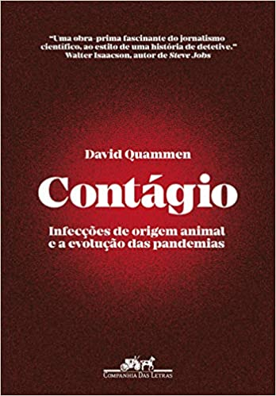

Início
InícioContágio
Autor: David Quammen
Preço: R$69,90
Compre aqui: Amazon
Em Contágio , publicado originalmente em 2012, David Quammen demonstra que havia consenso entre os especialistas sobre as características de uma próxima pandemia: o causador seria um vírus novo aos humanos, atingiria primeiro algum tipo de animal selvagem, como um primata ou um morcego, e seria altamente mutável, ao estilo de um vírus influenza ou de um… coronavírus. Escrito com ritmo de tirar o fôlego, o livro investiga os patógenos responsáveis pelas grandes epidemias da história ― entre elas, a gripe espanhola, a aids, o ebola e a SARS ― e os desafios que elas representam para os seres humanos. Quammen antecipa vários dos embates que enfrentamos hoje, indicando que temos muito o que aprender com os surtos pregressos para combater a atual pandemia. Como afirmou em uma entrevista recente: “Seja uma catástrofe ou algo que consigamos controlar, uma coisa que sabemos sobre essa nova pandemia é que não será a última”.
Capítulos:
- O cavaleiro da morte
- Treze Gorilas
- Tudo vem de algum lugar
- Jantar na fazenda de ratos
- O veado, o papagaio e o cabrito do vizinho
- Viralizando
- Hospedeiros celestiais
- O chimpanzé e o rio
- Tudo depende